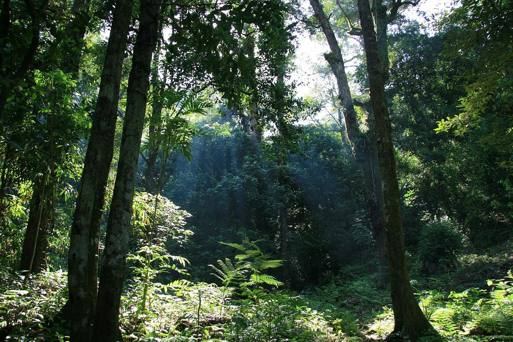

The southernmost country in Asia, Indonesia lies between latitudes 11°S and 6°N and longitudes 95°E and 141°E. It is also a transcontinental country, spanning Southeast Asia and Oceania and is the world's largest archipelagic state, stretching 5,120 kilometres (3,181 mi) from east to west and 1,760 kilometres (1,094 mi) from north to south. The exact number of Indonesia's islands varies according to different sources, usually ranging from 13,000 to 17,000, with around 922 permanently inhabited. Its five largest islands are Sumatra, Java, Borneo (shared with Brunei and Malaysia), Sulawesi, and New Guinea (shared with Papua New Guinea).
Indonesia's equatorial position ensures a relatively stable climate year-round, characterised by two main seasons: the dry season from May to October and the wet season from November to April, with no extremes of summer and winter. The climate is predominantly tropical rainforest, with cooler climates in higher areas over 500 metres (1,600 feet) above sea level. In Indonesia's highland regions, the climate is cooler and wetter than in the lowlands. Areas near tropical rainforests tend to receive consistent rainfall year-round (Köppen: Cfb), while those closer to monsoon and savanna regions have more distinct dry seasons (Köppen: Cwb)